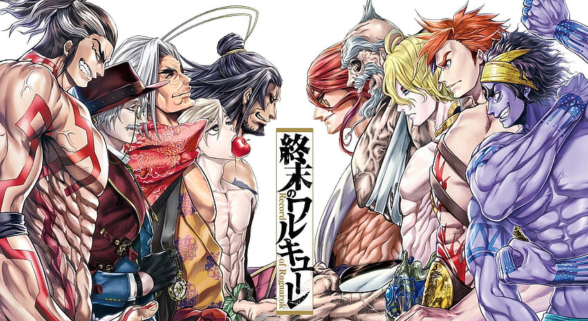

==========================================================================================

==========================================================================================
primero veamos que sucedio en la primera temporada:
Record of Ragnarok es una serie anime que se ambienta en un mundo donde los humanos deben vencer a los dioses todopoderosos en siete rondas.
Si no lo consiguen, su existencia terminará para siempre. Esta es la premisa de las batallas de Ragnarok.
Los dioses de todas las religiones se reúnen cada mil años en el Valhalla para decidir qué hacer con los humanos.
Pero esta vez ellos han ido demasiado lejos con las numerosas guerras, la destrucción de la naturaleza o la contaminación.
Por ello activan de nuevo la antigua ley que permite el enfrentamiento de los dioses con los humanos más fuertes.
Aqui te tengo un video explicandote:
Link